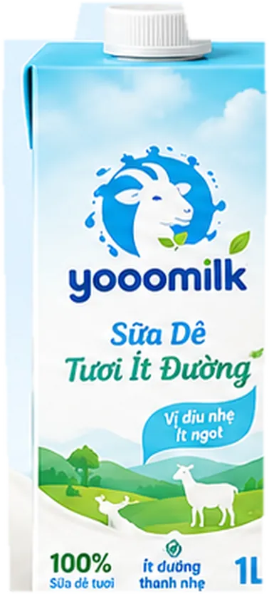

Sữa dê tươi nguyên chất 1L
Sữa dê tươi nguyên chất YoooMILK 1L dành cho những ai yêu thích hương vị sữa dê tự nhiên. Với dung tích tiện lợi, sản phẩm phù hợp để sử dụng trong thực đơn hằng ngày của cá nhân và gia đình.
69.000đ
Khám phá thế giới hương vị từ YoooMILK – nơi hội tụ các sản phẩm từ sữa dê, sữa hạt hạnh nhân và sữa chua. Từ vị thơm béo đặc trưng của sữa dê nguyên chất, lựa chọn ít đường đến những thức uống từ thực vật và món sữa chua mềm mịn, mỗi sản phẩm mở ra thêm một lựa chọn thú vị cho thực đơn hằng ngày.
Fresh choice
YoooMILK ♡
Danh mục đa dạngNhiều lựa chọn từ sữa dê đến sữa hạt
Thông tin sản phẩmTham khảo quy cách và giá bán
Đặt hàng thuận tiệnChọn sản phẩm ngay trên website
Kết nối tư vấnGửi câu hỏi đến YoooMILK
Bắt đầu từ nhóm sản phẩm bạn yêu thích: sữa dê với hương vị đặc trưng, sữa hạt hạnh nhân từ thực vật hay sữa chua mềm mịn. Mỗi danh mục đều giúp bạn dễ dàng khám phá lựa chọn phù hợp với khẩu vị.
Tìm hiểu từng sản phẩm qua mô tả, quy cách và giá bán được trình bày trực tiếp trên website. Bạn có thể lọc theo danh mục, tìm kiếm theo tên hoặc mở trang chi tiết để xem thêm thông tin trước khi lựa chọn.
Sữa dê tươi nguyên chất YoooMILK 1L dành cho những ai yêu thích hương vị sữa dê tự nhiên. Với dung tích tiện lợi, sản phẩm phù hợp để sử dụng trong thực đơn hằng ngày của cá nhân và gia đình.

Sữa dê tươi ít đường YoooMILK 1L là lựa chọn dành cho những khách hàng yêu thích sữa dê nhưng muốn giảm độ ngọt khi thưởng thức. Hương vị dịu nhẹ, dễ uống, phù hợp để bổ sung vào thói quen dinh dưỡng mỗi ngày.
Sữa dê Organic YoooMILK 1L dành cho những khách hàng quan tâm đến các sản phẩm thuộc dòng sữa dê hữu cơ. Sản phẩm mang đến thêm một lựa chọn cho những ai yêu thích sữa dê và mong muốn đa dạng hóa thực đơn hằng ngày.
Sữa hạt hạnh nhân YoooMILK 1L là lựa chọn thơm ngon dành cho những ai yêu thích thức uống từ thực vật. Hương vị hạnh nhân đặc trưng cùng dung tích 1L tiện lợi, phù hợp để thưởng thức tại nhà hoặc trong những giờ nghỉ giữa ngày.
Sữa chua YoooMILK lốc 4 hộp với kết cấu mềm mịn và hương vị thơm ngon, thích hợp làm món ăn nhẹ trong ngày. Quy cách đóng lốc tiện lợi giúp bạn dễ dàng bảo quản và thưởng thức cùng gia đình.
Không tìm thấy sản phẩm phù hợp. Bạn hãy thử từ khóa khác nhé.
Khám phá các dòng sản phẩm đang có tại YoooMILK, tham khảo thông tin và mức giá được niêm yết trên website. Lựa chọn hương vị bạn yêu thích và gửi yêu cầu tư vấn khi cần tìm hiểu thêm.
Nhận tư vấn ↗
YOOOYoooMILK giới thiệu danh mục sản phẩm gồm sữa dê tươi nguyên chất, sữa dê ít đường, sữa dê Organic, sữa hạt hạnh nhân và sữa chua. Thương hiệu hướng đến việc mang đến thêm lựa chọn hương vị cho những khách hàng yêu thích các sản phẩm từ sữa và thực vật.
Website được xây dựng như một không gian trực tuyến để khách hàng khám phá danh mục, tìm hiểu mô tả, quy cách và giá bán. Từng trang sản phẩm cung cấp thông tin cụ thể hơn, hỗ trợ quá trình cân nhắc trước khi đặt hàng hoặc gửi yêu cầu tư vấn.
“Một giọt tươi – Một ngày lành”Tìm hiểu thêm về câu chuyện YoooMILK ↗
Hướng đến những lựa chọn phù hợp với nhịp sống mỗi ngày.
Thông tin sản phẩm được trình bày rõ ràng để khách hàng tham khảo.
Tìm kiếm, xem sản phẩm và lựa chọn ngay trên một nền tảng.
Một vài giải đáp nhanh giúp bạn tìm hiểu danh mục, xem thông tin sản phẩm và thao tác đặt hàng trên website YoooMILK.
Bạn cần tìm hiểu thêm về sữa dê tươi, sữa hạt hạnh nhân hoặc sữa chua YoooMILK? Hãy gửi câu hỏi để tham khảo thông tin sản phẩm và nhận hỗ trợ tư vấn.